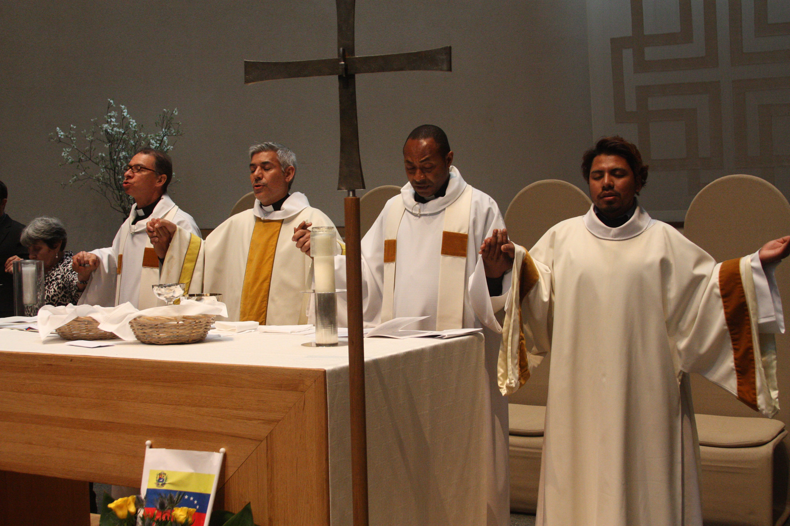
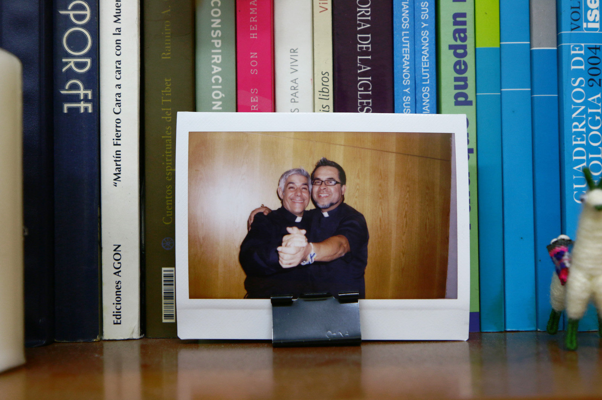
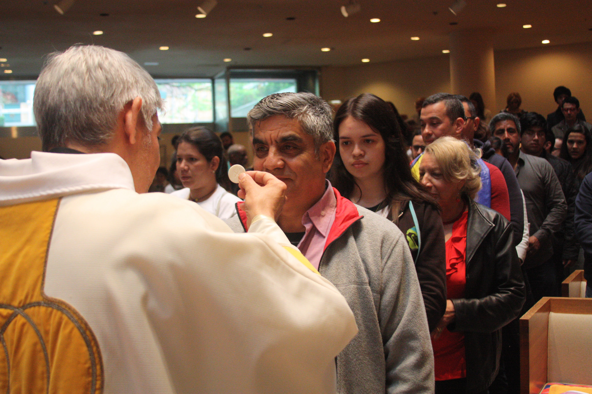
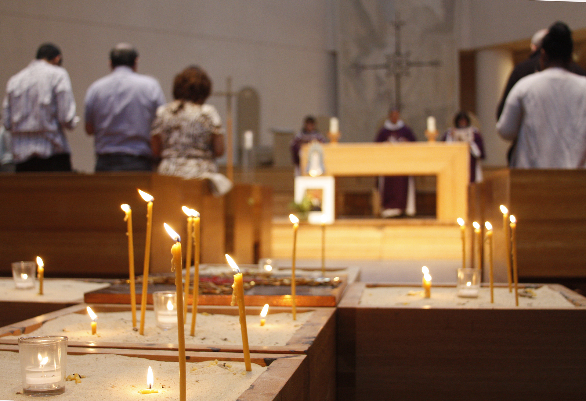
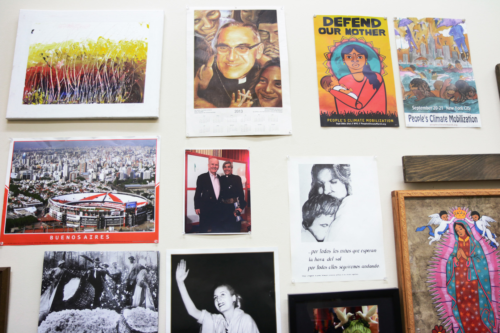
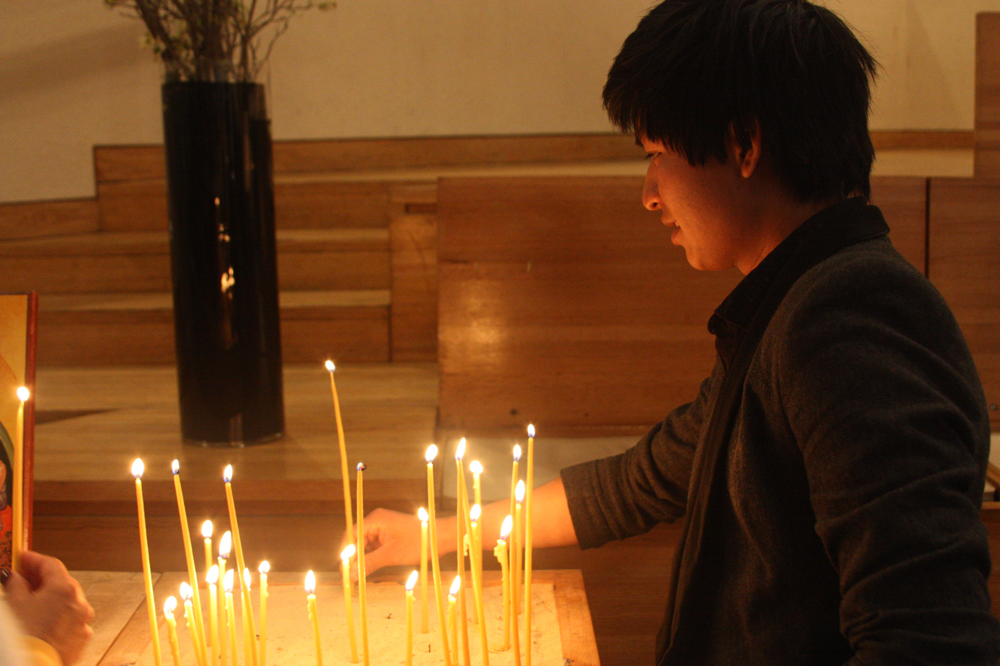

La resistencia del
Padre Fabián
Un sacerdote y su iglesia asumen una variante moderna del “underground railroad” para darle un estatus legal a menores indocumentados en Nueva York.
Hermes Espinoza recuerda el momento en que se vio solo en Nueva York con 17 años, sin familia y sin papeles para vivir legalmente en el país. Había cruzado la frontera un año antes, en 2007, procedente de México, para escapar de la discriminación por ser homosexual en su pueblo de Guerrero. Un día un amigo le refirió el nombre de un sacerdote en una iglesia en Midtown Manhattan, especialmente conocida por ser abierta a la comunidad LGBTQ. Se trataba de la Iglesia de Sión, la comunidad liderada por el padre Fabián Arias.
En su desesperación por encontrar una manera de permanecer legalmente en Estados Unidos, comenzó a visitar la iglesia con frecuencia. Allí era el más joven en la misa, y pronto surgió una relación un tanto especial con la comunidad, y con el padre. Como una forma de agradecer el apoyo que encontró en el templo, Hermes les obsequió la primera virgen de Guadalupe. Llegó un momento en que decidió jugarlo todo: le pidió al padre Fabián que reclamara su tutela legal, como vía para obtener la residencia permanente. Y el padre aceptó al hijo.
Ninguno de los dos imaginó en ese momento que diez años más tarde se convertirían en una familia moderna. Ahora, Fabián ha asumido la tutela legal de otros 26 hijos, y ha servido de enlace para que otros miembros de la iglesia también lo hagan.
Fabián, 53, no tenía hijos, pero con el pasar del tiempo se ha convertido en padre de muchos. Diez años después de que tomó la decisión de adoptar al primero, en abril pasado se reunió con Hermes y Octavio Godínez, 23, otro de sus hijos, un domingo después de la misa.
“Ojalá podamos hacer 11 millones... (risas) A todos los que se pueda”, dijo sentado en medio de los dos muchachos, al referirse a la práctica que le ha permitido regular el estatus migratorio de estos jóvenes menores de edad.
El sacerdote argentino vive en Nueva York desde 2002, y es el líder de la congregación luterana para hispanos de Saint Peter’s Church, que acoge a una comunidad de 300 inmigrantes, que prefiere la misa en español, marcada por un servicio cristiano con influencia latinoamericana. El 80 por ciento de esa comunidad son inmigrantes indocumentados, asegura el padre. Allí, encuentran refugio, pues es una de las 12 iglesias que forman parte del Nuevo Movimiento Santuario en la ciudad.
El movimiento resurge en 2007 en ciudades de California y Nueva York, hasta sumar 800 organizaciones en todo el país. Las iglesias santuario forman parte de esta coalición, que junto a otras instituciones se resisten de diferentes maneras a dejar desamparados a los inmigrantes indocumentados en Estados Unidos.
Solo en 2016, se registraron 450,954 deportaciones realizadas por la patrulla fronterizas y los agentes de inmigración y aduanas (ICE, por sus siglas en inglés), según el informe del año fiscal del departamento de Homeland Security. Estas cifras crecen año tras año, hasta registrar casi cinco millones de deportaciones entre 2000 y 2015, entre los que se encuentran acusados de cometer actos delictivos y otros que violaron las leyes de migración.
La política agresiva continua contra los inmigrantes se ha convertido en una tendencia en los últimos 16 años, en especial durante los gobiernos de George W. Bush y Barack Obama. Ahora la administración de Donald Trump mantiene un discurso que estereotipa y amenaza a la comunidad de inmigrantes que vive en este país.
¿Hasta dónde está dispuesta a llegar la comunidad de la Iglesia de Sión para ayudar a quienes viven cada día en peligro de deportación?
La lista del padre Fabián
Fabián no lo ha hecho solo. Pero Fabián, eso sí, es el hombre que echa a andar todo el mecanismo. La petición de Hermes impulsó a Fabián hacia una nueva vocación de servicio hacia la comunidad con que se sintió identificado desde que llegó a Nueva York: los inmigrantes latinoamericanos indocumentados en Estados Unidos.
Desde el inicio, Hermes fue, en varios sentidos, un sujeto especial. Su pasado resume varios de los traumas que a menudo delinean la vida de los inmigrantes: a los ocho años de edad uno de sus hermanos fue asesinado por su orientación sexual. Luego, a los 16, decidió atravesar el desierto de Nogales, Arizona, hasta llegar a los alrededores de California. Él, al ser homosexual, huía del bullying, la discriminación, de un eventual desenlace igual o parecido al de su hermano.
La mano que Fabián tendió a Hermes fue una consecuencia lógica de una serie de experiencias ocurridas luego de establecerse en la ciudad, que transformaron su vida y su fe.
A los 17 años, Fabián había entrado al seminario de la iglesia católica romana en Argentina. Allí fue discípulo del actual Papa Francisco. Tras haber tomado un año sabático, viajó para estudiar inglés en Estados Unidos desde su natal Buenos Aires, cuando decidió dejar de ser un cura católico.
Su paso a la iglesia luterana ocurrió en Nueva York, como resultado de una transformación de su pensamiento. Aquí comenzó a ver el luteranismo como una vertiente cristiana “más acorde con la realidad de la vida, que entiende que si dos personas se aman, puedan casarse aunque sean ambas del mismo sexo, o se hayan divorciado de parejas anteriores”, dice el sacerdote.
En la ciudad vió de cerca por vez primera la problemática de los inmigrantes. “En ese momento empecé a relacionarme con la situación poco digna de los llamados indocumentados”, recuerda Fabián. Era la época de George W. Bush, cuando en New Jersey entraban a las fábricas a llevarse a toda personal indocumentada.
“Lo que vivimos ahora no se compara con lo de esa época”, dijo el padre, sobre las redadas migratorias que se realizaban, la mayoría contra trabajadores inmigrantes. Y es que esta “cacería de brujas” se hizo evidente cuando las deportaciones aumentaron abruptamente entre 1996 y 1997, según datos en el archivo histórico de Homeland Security. Para ser exactos, aumentó en un 39.1 por ciento entre un año y otro.
En ese momento, el Illegal Immigration Reform and Immigrant Responsibility Act de 1996 dio paso a las deportaciones masivas. La reforma migratoria conocida como IIRAIRA creó el marco legal para que agencias migratorias como ICE regresaran a todo inmigrante que se extendiera del tiempo permitido por su documentación legal, si la tenía.
Fabián tiene claro que la vulnerabilidad a que se exponen los llamados indocumentados no es nueva, aunque el discurso marcadamente anti inmigrante de Donald Trump aparezca con más fuerza en Twitter y otros medios de comunicación. “Se trata de un modelo político agresivo. Es un modelo antihumano, que no respeta derechos civiles”, dijo el padre.
Crédito: Lidia Hernández Tapia.
Antes de liderar la iglesia de Sión, Fabián fue el director del Nuevo Movimiento Santuario durante cinco años, el movimiento moderno que resurge del proyecto que inició el pastor John Fife en Arizona en 1980. En ese entonces, Fife se opuso a que su templo fuera intervenido por las autoridades migratorias, y acogió a inmigrantes que pasaron la frontera sur de Estados Unidos cuando huían de las violentas guerras civiles en Centroamérica.
Hoy, Fabián dirige una iglesia que protege a latinos en toda su diversidad y recibe a grupos tergiversada, como la comunidad LGBTQ, a quienes casa dentro de su iglesia.
En 2008, cuando asumió ser guardián de Hermes, Fabián vio la oportunidad para dar el siguiente paso en su activismo. Tras tomar tutela del primero, la noticia sobre las “adopciones” se corrió de boca en boca, y fueron llegando uno a uno, y a veces, de dos en dos. Después de Hermes, fue Darwin. Luego llegaron Gloria, Brian, Blanca, Juan Carlos, Octavio, Lucas, Michael, Allan, Yovanis, el hermano de Yovanis, Julián, Diego... Y la lista continúa.
El proceso
La adopción demora generalmente entre tres y seis meses, desde el momento en que Fabián le presenta el caso a sus abogados hasta que el juez da la orden de tutela o guardián. El equipo legal solicita el título de tutela a los padres biológicos en sus países de origen (si están vivos).
La corte evalúa los registros civiles y antecedentes penales de Fabián, las condiciones del hogar donde residiría el menor y las personas con quienes viviría. Y, finalmente, la orden emitida por un juez de la corte de familia da la aprobación. Después, el joven puede solicitar permiso de trabajo y, a los tres años, puede solicitar una residencia permanente.
La práctica funciona como una variante moderna del “underground railroad”, una red de rutas secretas establecidas en los Estados Unidos en el siglo XIX, para que esclavos afroamericanos escaparan a estados libres, con ayuda de abolicionistas y aliados que simpatizan con la causa.
En este caso, Fabián y algunos fieles de la iglesia recurren a organizaciones sin fines de lucro como The Door, Cáritas y Legal Aid Society para comenzar el proceso de tutela. Los abogados de estas organizaciones ofrecen sus servicios de forma gratuita durante todo el proceso de adopción.
Los hijos continúan llegado a la Iglesia de Sión recomendados, a veces, por los ya “adoptados”. Ya sea que el joven llegue solo o alguien lo presenta ante Fabián, el padre evalúa el caso del menor con especialistas en leyes migratorias, para determinar si existen otras vías legales para regular su estatus migratorio, como DACA. Para aquellos que necesiten la tutela legal, según Fabián, existen algunos criterios con los que se debe cumplir para decidir si va a ser su próximo “hijo”.
“Primero, tienen que tener una presencia acá (en la iglesia), tienen que venir a las actividades, ser muy responsables con sus estudios, porque eso es parte fundamental para el futuro de ellos”, explicó Fabián, quien da seguimiento con maestros y directores para saber el rendimiento escolar de cada uno.
Ahora, la cantidad de hijos se ha convertido en un obstáculo para seguir con las afamadas “adopciones”, cuando en la corte insisten en cómo puede atender a tantos jóvenes a la vez. Así, en 2015 Fabián decidió pedir ayuda a Olga Torres, 59, feligresa de la comunidad, para que asumiera la tutela legal de Octavio y Lucas Godínez. Y ella aceptó.
En ese momento, el sacerdote se encontraba en uno de sus frecuentes viajes a Argentina. Necesitaba con urgencia una persona de confianza que se hiciera responsable de los hermanos, ahora de 23 y 18 años, respectivamente. El menor, Lucas, había sido detenido por entrar al subway sin pagar y tenía una orden de deportación, pues lo habían registrado cuando cruzó la frontera. Era inminente: lo habrían devuelto a México, de no haber sido “adoptado”.
“Fabián es todo un personaje. Es intenso”, dijo Olga en una entrevista telefónica. “El que lo puede seguir, lo sigue. Pero no cuesta nada decirle que sí a Fabián, porque cuando vos más lo necesitas, él está ahí con vos. Eso no quiere decir que no nos peleemos muchísimo en política argentina, porque él es de un partido y yo soy de otro. Igual en el fútbol”.
Octavio y Lucas no conviven con Olga, como tampoco viven con Fabián, como pasa con los demás muchachos. Cada uno alquila un cuarto, y son totalmente independientes. Pero, se reúnen, a menudo, los domingos en la iglesia.
Olga coincidía con el padre en eventos de la comunidad argentina en Nueva York. Luego, comenzó a ir a la iglesia de Sión. Como madre e inmigrante, ahora ciudadana americana, Olga considera que otros miembros de la iglesia pueden tener miedo de asumir la responsabilidad de ser guardián legal de uno de estos jóvenes pero, según ella, lo haría otra vez de ser necesario.
“Si escuchas las historias de ellos, no puedes dejar de hacerlo”, dijo. “Y no es nada complicado. Además, son chicos protectores, que te agarran para ayudarte a subir una escalera. Vienen de algunas familias que les pegaban o los maltrataban. Y lo único que quieren es tener sus documentos para dejar de ser perseguidos”.
Fabián lleva imágenes en su teléfono de sus hijos, recién salidos de la corte junto a los abogados del caso. “El significado de guardián tiene que ver, para mí, no solo con lo legal, sino con dar un acompañamiento, que no estén solos, que sientan que tienen una casa”, dijo.
Para Hermes, el padre Fabián llega a ocupar el rol de una verdadera figura paterna. Además de asumir la tutela legal de estos jóvenes, les brinda el apoyo que les falta tras haber dejado sus casas o vivir sin familia en Estados Unidos.
“Yo lo quiero como a un padre. Tengo una persona que me escucha y comprende mi situación. Tengo amistades aquí, pero sí cuento con él y hablamos cuando podemos”, dijo Hermes.
Diego, el hijo más reciente
“¿Por qué lo quieren tanto los inmigrantes, Padre? ¿De nuevo usted por aquí?”, le preguntó la jueza de la corte de familia cuando presentó la solicitud para asumir la tutela de Diego, el último menor que se suma a la lista.
El caso de Diego, la “adopción” más reciente, fue una de las más complicadas. Una mala interpretación de una trabajadora social enviada por la corte hizo difícil la comunicación con la jueza. Durante la investigación previa a la cita en la corte, la investigadora entendió por error que la forma en que había llegado Diego a Fabián era a través de la recomendación de un abogado. El malentendido causó que en febrero de este año la tutela del menor le fuera denegada. Apelaron, claro, y dos meses después, ganaron el caso.
Diego Ztuc, 20, llegó a Estados Unidos en 2012 procedente de Mazate, Guatemala. “Me fui de mi casa porque allá no le importo a nadie”, dijo.
Cruzó la frontera solo, con 15 años. Primero viajó a México, donde trabajó y reunió dinero para pagar los buses que cruzaban los pueblos entre Sonora y Arizona. Al cruzar por Nogales, lo detuvo la policía fronteriza mexicana; y cuando vieron que no tenía a nadie más que le ayudara, lo dejaron seguir.
Vivió los últimos cuatro años entre Miami y Nueva York, donde una día coincidió con el padre Fabián, quien repartía volantes promocionales de la iglesia en un parque. Durante el proceso legal, vivió un tiempo en el Bronx en casa del sacerdote. Ahora, el padre le ayuda a buscar una escuela para que aprenda a hablar inglés bien.
El padre sabe que su nombre ya aparece demasiado en los registros judiciales de la ciudad de Nueva York, y que los jueces de la corte de familia lo reconocen. No olvida los escándalos de pederastia en que a menudo ha estado envuelta la iglesia católica. Sabe que su iglesia está en una lista especial de los agentes de ICE. Y que muchos cuestionan de dónde sale el dinero para ayudar tantos muchachos. Por eso, entiende que los jueces le hagan todo tipo de preguntas personales en la corte, antes de concederle la tutela.
Las leyes no establecen una cifra límite de hijos para “adoptar”, siempre que la persona demuestre que ha mantenido una actitud correcta, con respecto a los menores que ya están bajo su tutela. Por tanto, no hay inconvenientes legales para ser guardián de otros tantos.
Varios de los ya “adoptados” alcanzaron la mayoría de edad, lo que Fabián aprovecha para seguir con su estrategia protectora pues, ante la ley, ya no son dependientes del guardián. Inclusive, algunos ya tienen sus propios hijos y le dicen abuelo a Fabián.
El debate
Las agencias del orden conocen sobre este servicio de “adopciones” que algunas iglesias ofrecen en Nueva York y en el estado de California. Y en cierto modo, lo apoyan.
“Nosotros (Homeland Security) queremos eso (tutela legal de menores indocumentados). Queremos que esos jóvenes sean estadounidenses. Queremos que crezcan en nuestra sociedad, prosperen y sean felices. Porque, cuando apoyas a un joven de otro país para que tenga una vida americana le estás dando oportunidad”, dijo un agente de ICE, que pidió no ser identificado.
Explicó que las iglesias son espacios de fe con los que ICE prefiere mantener cierta distancia, siempre que se mantengan dentro del marco legal y eviten que las personas bajo su protección no tengan “deudas pendientes” con las autoridades. “Siempre que mantengan a estos jóvenes fuera de gangas y de ser criminales, está bien”, dijo.
Sin embargo, entre las iglesias del Nuevo Movimiento Santuario, no todas conocen sobre el trabajo “adoptivo” que realizan Fabián y los fieles de Sión. Aun así, manifestaron su apoyo ante la iniciativa. El padre Luis Barrios en la iglesia de Santa Cruz, la congregación hispana de la Holyrood Episcopal Church en el Alto Manhattan, considera que la práctica es extrema, pero que la leyes la requieren.
Cuarenta cuadras más abajo en la misma isla de Manhattan, el padre Fabián saborea una jarra de mate y reflexiona sobre la familia que ha creado. En las paredes cuelgan fotos de santos. Resalta la imagen de la virgen de Guadalupe que llevó Hermes, y un retrato de Eva Perón. “Yo no sé si ha cambiado la vida de los chicos el hecho de que yo sea su guardián legal”, dice el padre frente a su oficina en la iglesia.
La táctica para la resistencia tiene sus costos humanos, sociales y económicos, por lo que el propio Fabián entiende que no es una estrategia sostenible.
“No, ni hablar. Porque todos los jueces me plantean “¡Otro vez acá!”, y no. Quisiera tener una tremenda casa con, por lo menos, 30 cuartos para que los chicos no tengan que estar pagando los 500 pesos y yendo al trabajo después de la escuela, y durmiendo seis horas...lejos de la gente, de sus afectos, en una sociedad que los esclaviza. Apostar a esto, no pero lo voy a seguir haciendo...estar al lado de ellos es importante, es darles un poco más de cielo, ¿no?”, dijo, entre los sorbos de mate.
Mientras la corte lo permita, la familia del padre Fabián y de la Iglesia de Sión seguirá creciendo.